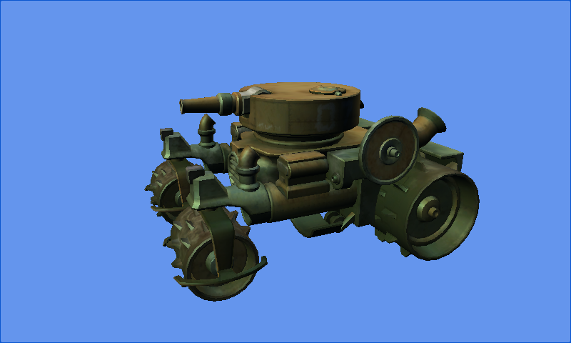

Custom Model Class
Ported from Microsoft's XNA 4.0 Custom Model Class Sample.
Source for this sample on GitHub ↗

Play ▸Opens in a new tab.
About this sample
The sample replaces XNA's built-in Model type with its own CustomModel class. Its content processor turns an imported FBX model into geometry and shared material effects. The game loads that custom data and draws a continuously rotating tank.
Controls
| Action | Control |
|---|---|
| View the rotating model | Automatic |
| Exit | Escape |